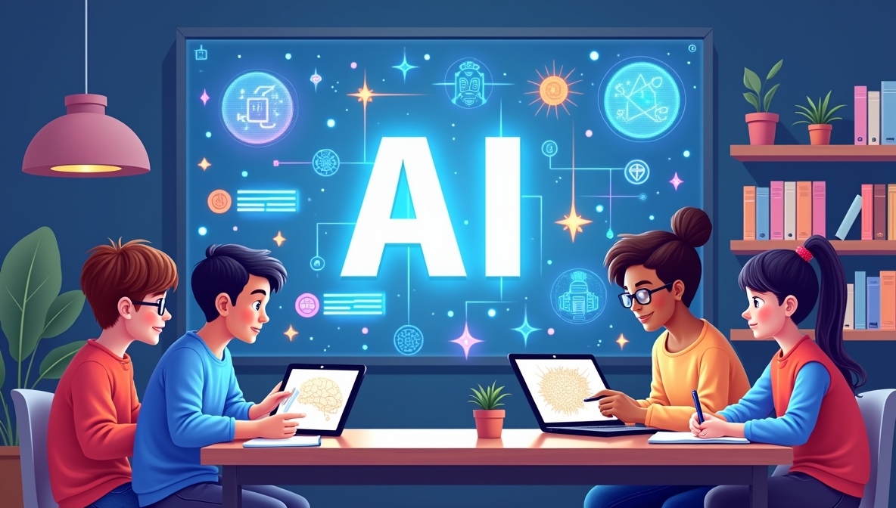

Ever wondered how Netflix knows exactly what show you’ll binge next? Or how your phone unlocks just by looking at your face? Or how that robot vacuum knows where the sofa ends and the carpet begins?
Spoiler alert: That’s AI at work.
Artificial Intelligence (AI) may sound like something out of a sci-fi movie, but guess what? It’s already part of your life — every single day. And whether you're a student, gamer, creator, or just curious about the world, it's time to discover the cool, weird, and powerful ways AI is shaping your world.
Got a smartphone? You're already carrying a tiny AI lab around.
Fun fact: Your phone learns how you speak, text, and behave — it customizes its AI just for you.
Ever noticed how YouTube, Netflix, or Spotify magically recommends stuff you love? That's AI-powered algorithms analyzing what you’ve watched, liked, skipped, and even how long you paused.
🧠“Oh no, I listened to one sad song and now my playlist thinks I’m heartbroken.†Yep, that’s AI doing its job a little too well.
Struggling with homework? AI to the rescue!
AI isn’t just smart — it’s a straight-A student with 24/7 office hours.
Think AI is just about numbers? Think again.
🤖 + 🨠= Future Picassos with code
Self-driving cars? All thanks to AI. While they're not everywhere yet, the technology is zooming ahead.
Your generation might never need to take a driving test. Wild, right?
From spam filters to cybersecurity, AI helps protect your data and devices.
So yeah, AI is basically your personal Iron Man suit (minus the lasers).
Because AI isn’t just part of your world — it IS your world. Whether you're into coding, art, science, music, fashion, or sports, AI is opening doors to crazy new possibilities.
And guess what? You don’t have to be a genius to start learning it.
The earlier you explore AI, the more prepared you'll be to build the future — or at least impress your friends with your robot DJ.
AI is exciting, but it also comes with responsibilities. Be mindful of privacy, don’t believe everything a bot says, and always keep your curiosity alive.
You’re not just the users of AI. You’re the future designers, thinkers, and changemakers who will decide how AI shapes our lives.
So ask questions. Get creative. And who knows? The next big AI breakthrough might just come from you. 🚀
 ↠Back to Blogs